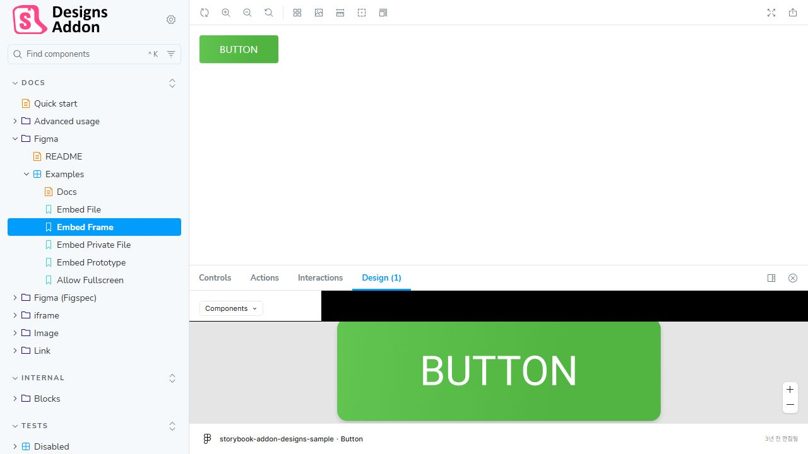

1. 목적과 범위
Storybook은 공통 UI 컴포넌트와 사용자에게 노출되는 화면 UI를 한곳에서 탐색하고 검수하기 위해 사용합니다. 라우터 주소를 모르더라도 사이드바의 화면 이름과 상태를 통해 필요한 UI를 찾고, 실제 애플리케이션을 모두 실행하지 않아도 컴포넌트와 화면을 독립적으로 확인할 수 있게 합니다. Story 작성과 갱신은 AI 코딩 도구가 우선 수행하고 프론트엔드 개발자가 대상, 상태와 결과를 검수하는 반자동 운영을 기본으로 합니다.
Storybook을 별도의 문서 작성 업무로 운영하지 않습니다. 컴포넌트와 화면 UI 생성·변경 작업의 일부로 Story를 함께 관리하며, 자동 검사로 코드와 Story의 불일치를 확인합니다.
Storybook은 UI 카탈로그와 독립 렌더링 환경입니다. 실제 라우팅, Backend 연동, Native App 연결과 전체 업무 흐름의 최종 검증은 실제 애플리케이션 환경에서 수행합니다.
정확한 Storybook 버전, Framework와 Addon 구성은 실제
애플리케이션의 package.json과 Lock File을 기준으로
결정합니다. 애플리케이션 저장소가 생성되기 전에는 설치 또는 CI
적용이 완료된 것으로 간주하지 않습니다.
2. 역할
| 담당 | 주요 책임 |
|---|---|
| AI 코딩 도구 | 기존 컴포넌트·화면과 Story 조사, Story 초안 생성과 갱신, Autodocs 연결, 검사 실행 및 오류 수정 |
| 프론트엔드 개발자 | Story 작성 대상 승인, 화면 분류와 제품에 필요한 상태 판단, Figma 비교, 반응형·접근성·상호작용 검수 |
| CI | 합의된 컴포넌트와 화면의 Story 누락 검사, Storybook 정적 Build와 합의된 테스트 실행 |
Cline, Claude Code와 Codex 중 어떤 도구를 사용하더라도 동일한 기준을
적용합니다. 도구 공통 규칙은 실제 애플리케이션 저장소의
AGENTS.md를 기준으로 관리하고 특정 도구 전용 설정에는
공통 규칙을 복제하지 않습니다.
3. Story 작성 대상과 분류
다음 UI를 Story 작성 대상으로 합니다.
-
apps/app-webview/src/components/ui의 공통 UI -
packages/ui의 여러 Web 애플리케이션 공통 UI - 여러 화면에서 반복되며 독립적으로 상태를 확인할 가치가 있는 feature 컴포넌트
- 공개 Props, variant 또는 상호작용 상태를 가진 컴포넌트
- 라우터를 통해 사용자에게 제공되는 페이지와 화면 UI
- Desktop, Tablet과 Mobile에서 배치가 달라지는 주요 화면
- 실제 화면에서 진입 조건 때문에 확인하기 어려운 loading, empty, error와 권한 상태
사용자에게 노출되는 페이지와 화면은 최소 하나의 대표 Story를 갖는 것을 기본으로 합니다. 라우트 파일이 데이터 조회와 조합만 담당한다면 라우트 파일 자체를 억지로 렌더링하지 않고, 실제 화면 UI를 담당하는 컴포넌트의 Story로 해당 페이지를 대표할 수 있습니다.
다음 항목은 화면 UI가 없거나 동일한 UI를 중복하므로 제외할 수 있습니다. 제외할 때는 대상과 사유를 남깁니다.
- 한 부모에서만 사용하는 단순 UI와 레이아웃
- 타입, 상수, utility, helper와 export 전용 파일
- API Route, Route Handler, Redirect 전용 Route와 Metadata 파일
- 경로 Parameter만 다르고 화면 구조와 상태가 동일해 기존 Screen Story로 대표할 수 있는 Route
- 독립 렌더링을 위해 과도한 Mock이 필요한 내부 구현
- 실제 재사용이나 독립 검증 필요성이 확인되지 않은 Wrapper
Storybook을 위해 사용하지 않는 Props, variant 또는 상태를 새로 만들지 않습니다.
Storybook 사이드바는 라우터 경로가 아니라 사람이 이해할 수 있는 UI
이름을 기준으로 구성합니다. 상위 분류는 최소한
Components, Features,
Screens를 구분하고, Screen은 서비스 영역, 화면 이름과
상태가 드러나도록 작성합니다. 실제 분류명은 프로젝트의 정보 구조가
확정된 뒤 일관되게 적용합니다.
4. 기본 구성
Storybook은 먼저 apps/app-webview에서 작은 범위로
도입합니다. 여러 애플리케이션에서 실제 공유되는 UI와 운영 필요성이
확인된 뒤 별도 Storybook Application 또는 공통 구성을 검토합니다.
Next.js 프로젝트에서는 설치된 Next.js, React, Node.js와 Build 설정을 확인한 뒤 호환되는 Storybook Framework를 선택합니다. 특별한 Webpack 또는 Babel 제약이 없다면 공식 문서에서 권장하는 Next.js Vite Framework를 우선 검토합니다.
기본 기능은 다음 범위로 제한합니다.
- Component Story Format 기반 Story
- Controls와 Autodocs
- 접근성 검사
- Desktop, Tablet과 Mobile 화면 확인을 위한 Viewport
- Storybook 정적 Build
- 실제 필요가 확인된 상호작용 테스트
유료 호스팅과 시각적 회귀 서비스는 기본 구성에 포함하지 않습니다. 팀 외부 공유, Pull Request 단위 시각 비교와 변경 승인 흐름이 실제로 필요해진 뒤 별도로 검토합니다.
자세한 설치 기준은 Storybook 설치 문서와 Next.js Vite Framework 문서, 페이지 구성 문서와 Story 분류 문서를 확인합니다.
5. 애플리케이션 스타일 연결
Storybook은 실제 애플리케이션과 같은 기준으로 컴포넌트와 화면 UI를 렌더링해야 합니다.
globals.css와 Tailwind CSS 4 설정을 연결합니다.- Semantic Token과 CSS Variable을 애플리케이션과 동일하게 사용합니다.
- 프로젝트의 import alias를 유지합니다.
- 실제 렌더링에 필요한 Font와 전역 Provider만 연결합니다.
- Router, Query, Theme 또는 Form Context는 해당 컴포넌트나 화면에 필요한 최소 범위로 제공합니다.
- Page 또는 Screen Story의 Route Parameter와 화면 입력값은 Story 안에서 재현 가능하게 고정합니다.
- API 응답을 재현해야 한다면 승인된 계약이 전달된 이후에만 해당 화면에 필요한 최소 Fixture 또는 Mock을 사용합니다.
- 전체 애플리케이션 환경을 재현하기 위한 과도한 Mock과 Provider를 만들지 않습니다.
Storybook과 실제 화면의 스타일이 다르면 Story를 임의로 보정하지 않고 전역 스타일, Token, Provider와 Build 설정의 차이를 먼저 확인합니다.
6. Story 작성 기준
Story 파일은 컴포넌트 또는 화면 UI 구현 가까이에 둡니다.
button.tsx
button.stories.tsx컴포넌트 Story는 실제 컴포넌트의 공개 API를 기준으로 작성합니다.
- 기본 상태를 작성합니다.
- 실제로 지원하는 주요 variant와 size를 작성합니다.
-
disabled,loading,error,empty처럼 컴포넌트가 실제로 소유하는 상태만 작성합니다. - 중요한 사용자 상호작용은 재현 가능한 경우에만 작성합니다.
- 존재하지 않는 Props와 상태를 추측하지 않습니다.
- 내부 구현 세부사항보다 사용자가 선택할 수 있는 공개 API를 보여줍니다.
- 테스트를 통과시키기 위해 Story를 삭제하거나 검사 대상에서 임의로 제외하지 않습니다.
Page와 Screen Story는 다음 기준으로 작성합니다.
- 라우터 주소를 몰라도 화면의 목적을 알 수 있는 이름을 사용합니다.
- 기본 화면을 작성하고 실제 제품이 지원하는 loading, empty, error, 권한과 완료 상태를 필요한 만큼 분리합니다.
- 실제 지원 범위에 맞춰 Desktop, Tablet과 Mobile Viewport에서 레이아웃을 확인합니다.
- 데이터, Route Parameter와 Provider는 같은 상태를 반복 재현할 수 있는 최소 범위로 제공합니다.
- 실제 결제, 인증, Backend 처리와 Native App 기능을 Storybook 안에서 완료된 것처럼 모사하지 않습니다.
- 여러 Route가 동일한 화면을 사용하면 Story를 중복하지 않고 화면 상태 또는 입력값으로 구분합니다.
Story의 title, 이름과 분류는 UI의 실제 사용 범위를
드러내야 합니다. UI 원형, 애플리케이션 공통 조합, feature 컴포넌트와
화면이 같은 분류에 무질서하게 섞이지 않도록 합니다.
7. Autodocs와 UI 카탈로그
Autodocs를 사용해 Story와 TypeScript 정보에서 컴포넌트 문서를 생성합니다. Props 전체 목록을 별도 Markdown 문서에 중복 작성하지 않습니다.
Storybook은 다음 질문의 기준으로 사용합니다.
- 어떤 공통 컴포넌트가 있는가?
- 컴포넌트가 어떤 Props와 variant를 제공하는가?
- 기본 상태와 주요 예외 상태가 어떻게 보이는가?
- 컴포넌트를 독립적으로 렌더링하고 조작할 수 있는가?
- 어떤 사용자 화면이 있으며 화면별 대표 상태는 무엇인가?
- 라우터 주소를 몰라도 화면 이름과 서비스 영역으로 UI를 찾을 수 있는가?
- 화면이 Desktop, Tablet과 Mobile에서 어떻게 보이는가?
Autodocs는 주로 컴포넌트의 공개 API를 설명하는 데 사용합니다. Page와 Screen Story는 화면 이름, 대표 상태, Viewport와 필요한 짧은 설명을 중심으로 구성합니다. 업무 목적, 사용 금지 조건이나 접근성 제약처럼 코드와 타입에서 알 수 없는 내용만 추가하고, 자세한 동작은 실제 코드와 사용처를 기준으로 합니다.
Autodocs 설정은 Storybook Autodocs 문서를 따릅니다.
8. Figma와 Storybook의 역할
Figma는 컴포넌트와 화면의 시각적 기준 및 디자인 의도를 제공하고 Storybook은 실제 코드로 구현된 컴포넌트와 화면의 렌더링 상태를 제공합니다.

@storybook/addon-designs 공식 Embed Frame 데모의 Story와 Design 패널검수자는 라우터 주소나 개발용 진입 조건을 알지 못해도 Storybook 사이드바에서 서비스 영역, 화면 이름과 상태를 선택하고 실제 구현과 디자인 기준을 함께 확인할 수 있습니다.
- Figma Main Component의 Description에는 코드 컴포넌트 이름, import 경로와 주요 Props를 기록합니다.
- 실제 코드 또는 Storybook에 접근할 수 있는 URL이 있으면 Main Component의 Dev resource로 연결합니다.
- 외부 Storybook URL이 없으면 컴포넌트 이름과 Story title을 기록하고 실제 소스 링크를 우선 연결합니다.
- Figma Description, Story와 실제 코드가 다르면 실제 코드와 변경 의도를 확인한 뒤 함께 갱신합니다.
- Figma의 주요 Screen에는 연결되는 Story 이름을 기록하고, 접근 가능한 Storybook URL이 있으면 Dev resource로 연결합니다.
- Story에는 Figma 파일, Frame 또는 Prototype URL을 연결할 수 있습니다.
- 특정 Frame을 표시하려면 Figma에서 선택한 Frame의 링크를 복사해 사용합니다. 이 URL에는 해당 Frame의
node-id가 포함됩니다. - Storybook의
Design탭에서 연결된 Figma Embed를 확인합니다.
export const PaymentFailed = {
parameters: {
design: {
type: 'figma',
url: 'https://www.figma.com/design/FILE_KEY/...?node-id=120-480',
},
},
};위 화면은 @storybook/addon-designs 공식 데모를 직접 캡처한 예시입니다. 실제 표시 결과는 Storybook과 Addon 버전, 패널 크기, Figma 파일 권한에 따라 달라질 수 있습니다.
Storybook은 Code Connect를 대체하지 않지만 AI 코딩 도구와 개발자가 기존 컴포넌트의 API와 전체 화면 상태를 찾는 실행 가능한 UI 기준으로 사용합니다.
9. AI를 이용한 반자동 운영
9.1 최초 도입
최초 도입 시 AI 코딩 도구가 지정된 공통 UI 경로와 사용자 노출 Route·Page·Screen을 조사해 다음 내용을 먼저 보고합니다.
| 확인 항목 | 내용 |
|---|---|
| UI 대상 | 실제 export된 컴포넌트 또는 사용자에게 노출되는 화면 이름 |
| 구분 | Component, Feature 또는 Screen |
| Story 상태 | Story 존재, 누락 또는 실제 코드와 불일치 |
| 작성 필요성 | Story 작성 대상 여부와 근거 |
| 주요 상태 | 실제 Props, variant, 화면 상태와 Viewport |
| 제외 사유 | 화면이 없는 Route, 동일 UI 중복, helper 또는 내부 구현 등 |
목록을 사람이 검토한 뒤 승인된 대상만 Story로 작성합니다. 모든
.tsx 파일을 등록하지는 않지만 사용자에게 노출되는
페이지와 화면은 기본 등록 대상으로 분류합니다. Button, Input, Card,
Dialog와 Badge처럼 단순하고 반복 사용되는 공통 UI와 대표 화면 몇
개로 파일럿을 진행합니다. Story 작성, 사이드바 탐색과 Build 결과를
확인한 뒤 나머지 사용자 화면으로 확대합니다.
9.2 일상적인 변경
- 공통 컴포넌트를 새로 만들면 같은 변경에서 Story를 작성합니다.
- 사용자에게 노출되는 화면을 새로 만들거나 화면 구조를 변경하면 같은 변경에서 Screen Story를 작성하거나 갱신합니다.
- 공개 Props 또는 variant를 변경하면 기존 Story도 함께 갱신합니다.
- 컴포넌트 내부 구현만 바뀌고 공개 상태가 달라지지 않으면 불필요하게 Story를 다시 작성하지 않습니다.
- 완료 보고에는 추가하거나 변경한 Story, 표현한 상태, 검사 결과와 재현하지 못한 환경 의존성을 포함합니다.
9.3 정기 점검
필요할 때 AI 코딩 도구로 컴포넌트·사용자 화면과 Story의 누락 및 불일치를 조사합니다. 먼저 목록과 근거를 보고하고 승인된 항목만 수정합니다.
- Story가 필요한 공통 컴포넌트에 Story가 없는가?
- 사용자에게 노출되는 페이지 또는 화면을 Storybook 사이드바에서 찾을 수 없는가?
- 화면 이름과 분류만으로 목적을 이해할 수 있는가?
- 주요 화면의 실제 지원 Viewport와 상태가 빠져 있는가?
- 삭제되거나 이름이 바뀐 Props와 variant가 Story에 남아 있는가?
- Story가 존재하지 않는 export나 import 경로를 사용하는가?
- 실제로 지원하지 않는 상태를 문서화하고 있는가?
- Storybook 렌더링을 위해 불필요한 제품 코드를 변경했는가?
9.4 AI 요청 예시
다음 요청은 Cline, Claude Code, Codex 등 사용하는 AI 코딩 도구와 관계없이 활용할 수 있습니다. 실제 경로와 프로젝트 검사 명령은 저장소 기준에 맞게 적용합니다.
최초 구축 또는 범위 확대
지정된 공통 UI 경로와 사용자에게 노출되는 Route, Page, Screen 및 기존 Story를 조사해 줘.
각 컴포넌트의 실제 export, 공개 Props와 variant를 확인하고,
각 사용자 화면의 이름, 대표 상태, Viewport와 코드 위치를 확인해 줘.
Storybook 등록 대상과 제외 대상을 근거 및 제외 사유와 함께 먼저 보고해 줘.
모든 .tsx 파일을 등록 대상으로 간주하지 말고,
사용자에게 노출되는 화면은 기본 등록 대상으로 분류해 줘.
라우트 파일이 데이터와 조합만 담당하면 실제 화면 UI를 담당하는 컴포넌트를 찾아 대표 Story 대상으로 제안해 줘.
내가 목록을 확인한 뒤 승인한 대상에 대해서만
프로젝트의 기존 Story 형식에 맞춰 작성하고 정적 Storybook Build까지 확인해 줘.일상적인 UI 변경
이번 변경에서 새로 생성되거나 공개 API가 변경된 공통 컴포넌트와
새로 추가되거나 UI 구조가 변경된 사용자 화면을 확인해 줘.
관련 기존 Story와 실제 사용처를 먼저 확인하고 필요한 Story만 작성하거나 갱신해 줘.
실제 export, Props와 variant만 사용하고 존재하지 않는 상태를 추측하지 마.
컴포넌트는 기본 상태와 실제 variant를, 화면은 대표 상태와 지원 Viewport를 표현하고,
라우터 주소를 몰라도 사이드바에서 목적을 이해하고 찾을 수 있게 분류해 줘.
Storybook을 위해 제품 코드에 불필요한 Props, variant, wrapper 또는 Mock을 추가하지 마.
작업 후 정적 Storybook Build와 프로젝트에서 합의된 검사를 실행하고,
변경한 Story, 표현한 상태와 검사 결과를 보고해 줘.정기 누락 및 불일치 점검
공통 UI 경로, 사용자 노출 Route·Page·Screen과 Storybook Story를 비교해 누락과 불일치를 점검해 줘.
Story가 없는 모든 파일을 자동으로 등록하지 말고,
등록 대상, 판단 근거와 제외 사유를 먼저 보고해 줘.
사용자에게 노출되는 화면이 사이드바에서 빠졌거나 화면 이름과 분류만으로 찾기 어려운 경우도 보고해 줘.
삭제되거나 변경된 Props와 variant, 잘못된 import와 export,
빠진 화면 상태와 Viewport, 실제로 지원하지 않는 상태 및 Storybook만을 위한 제품 코드 변경도 확인해 줘.
내가 승인한 항목만 수정하고 정적 Storybook Build와 관련 검사를 실행한 뒤 결과를 보고해 줘.10. 자동 검사와 CI
AI 지침은 작업 방식을 안내하고 자동 검사는 결과를 확인합니다. Cline, Claude Code, Codex 또는 사람이 직접 작업하더라도 동일한 검사를 적용합니다.
TypeScript 검사
→ Lint
→ Storybook 정적 Build
→ 합의된 Story 테스트
→ 필요한 Production Build처음에는 Storybook 정적 Build를 필수 검사로 사용합니다. 파일럿이 안정된 뒤 Story 렌더링, 상호작용과 접근성 검사를 CI 필수 항목으로 승격합니다.
Story 누락을 자동 검사할 때 모든 .tsx 파일을 일괄
대상으로 간주하지 않습니다. 컴포넌트는 파일 규칙과 공개 export
목록을 기준으로 확인하고, 화면은 사용자 노출 Route·Page·Screen
목록과 합의된 제외 사유를 기준으로 확인합니다.
11. 완료 기준
- Story가 실제 컴포넌트의 export, Props와 variant를 사용하는가?
- 사용자에게 노출되는 화면을 라우터 주소 없이 Storybook 사이드바에서 찾을 수 있는가?
- 각 화면의 기본 상태와 실제로 지원하는 주요 상태 및 Viewport를 확인할 수 있는가?
- 기본 상태와 제품에서 실제로 지원하는 주요 상태가 포함되어 있는가?
- Story를 위해 불필요한 제품 Props, variant 또는 Mock을 추가하지 않았는가?
- Tailwind CSS, Semantic Token, Font와 필요한 Provider가 실제 애플리케이션과 일치하는가?
- Autodocs에서 공개 API를 확인할 수 있는가?
- Storybook 정적 Build와 합의된 검사를 통과하는가?
- Figma, Story와 실제 코드가 충돌하는 경우 차이를 확인하고 함께 갱신했는가?
- AI가 만든 결과를 프론트엔드 개발자가 검수했는가?
Storybook과 AI 코딩 도구는 컴포넌트와 화면 UI의 발견, 검수와 유지보수 비용을 줄이는 작업 도구입니다. 생성된 Story는 사람이 작성한 코드와 같은 리뷰 및 검증 기준을 적용합니다.